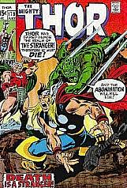
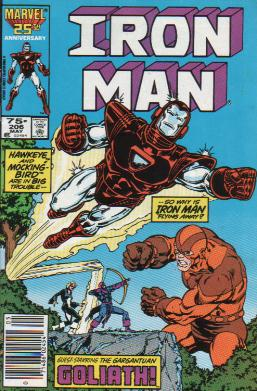
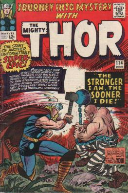
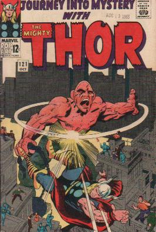

|
|
Comics of

Journey Into Mystery #114-115-Loki, frustrated that he could not take away Thor's powers to defeat him, decided to give a convict who was "brutal, savage, and consumed with hatred for society" superhuman powers. So during meal time in prison Loki slipped a potion in Creel's water instantly transforming him. Crusher breaks out of prison. Thor hears about a superpowered menace and goes to investigate. Their first battle ends when Balder teleports Thor away from Creel because while Thor was busy with Absorbing Man Loki kidnapped Jane Foster. Creel takes over a house demanding food. Odin breaks up the fight between Loki and Thor. Thor then tracks down the house Creel is in. Creel's powers are obviously not as honed as they are now. Thor exposing Creel to helium changes Creel into helium and he cannot control the change. Creel turns into heliuim and floats into outer space. Journey Into Mystery #120-123-Loki plots to overthrow Odin, but needs to keep Thor busy. Loki finds Creel and sends him back to Earth to defeat Thor. Thor and Absorbing Man wage battle all over the city. Creel grows as big as a building and swats Thor. Finally when Thor goes to protect a woman and her child Creel takes advantage of the situation and levels Thor with a wrecking ball to the head. Thor was only dazed a moment and the fight began again. Soon, however, Loki would teleport Creel to him and together they walk into Asgard. In Asgard Creel battles Odin. He tells Odin he will absorb the entire city and destroy Asgard. To avoid Asgard's destruction Odin presents Loki with the Scepter Supreme. Creel decides that he is more worthy than Loki and they fight over the scepter.They soon realize that they're stuck to the scepter and Odin sends the scepter out into space with them stuck for the ride. Thor annual #2-In one of the funnier appearances Odin's signal that the Tournament of Titans has begun flies past a seemingly frozen Loki and Absorbing Man. Absorbing Man asks Loki what the signal means, and Loki essentially tells him to shut up.
|